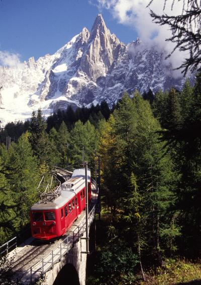
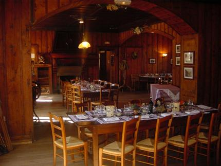
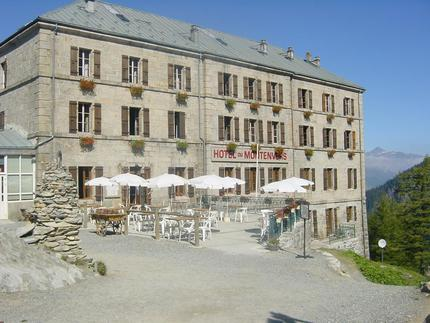

Social Event at Montenvers - sponsored by Google
|  |
Tuesday, April 5th
After 20 minutes by train along the mountain and the alpine wood, you will discover the fabulous site of Montenvers - Mer de Glace. Have a look at the glacier, famous mountains around before the dinner in hotel du Montenvers. The Montenvers Hotel, mythical place of the Chamonix Valley, was built in 1880. Well renovated, the restaurant will welcome you in a warmly mountain atmosphere for an unforgetable evening. The Restaurant at the Montenvers can accommodate up to 200 people. Social event participation will be granted on a first come first served basis. |
|  |  |